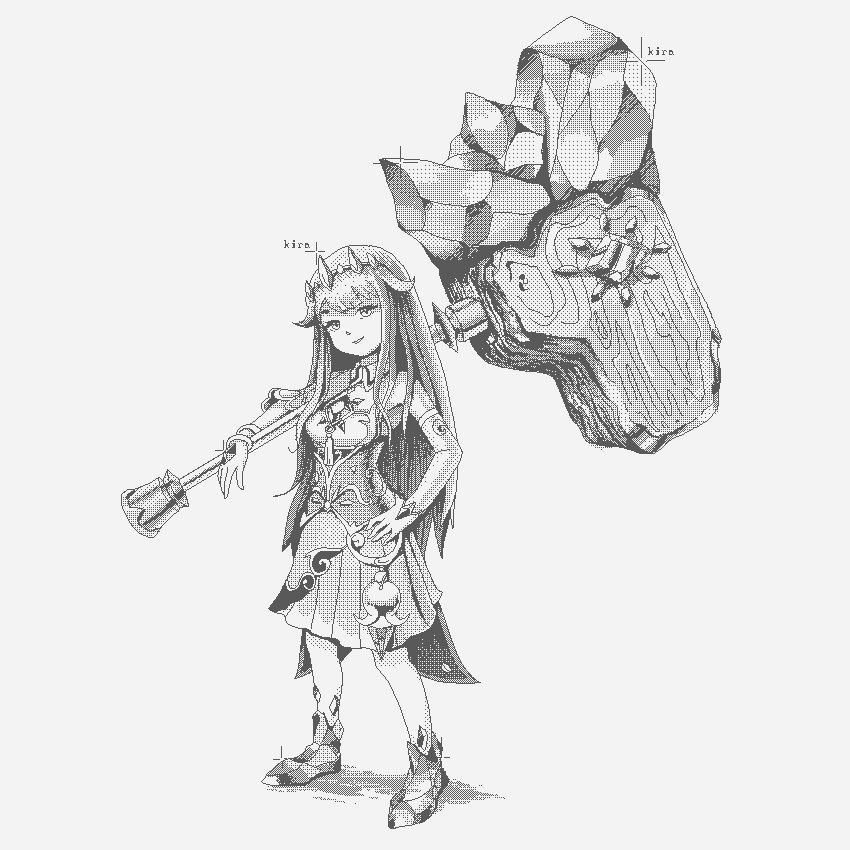

|  |
| Koseki Bijou 1-bit, 2025 |
| Continuation of my "HD pixel art"
experiments. What we learned from this is that this is both too large and too small for what I want to achieve. My dither brushes are fire, tho. |
| Nerissa Ravencroft 1-bit, 2025 |
| Started experimenting with dither pixel-art. Inspired by NEC PC98 graphics. |